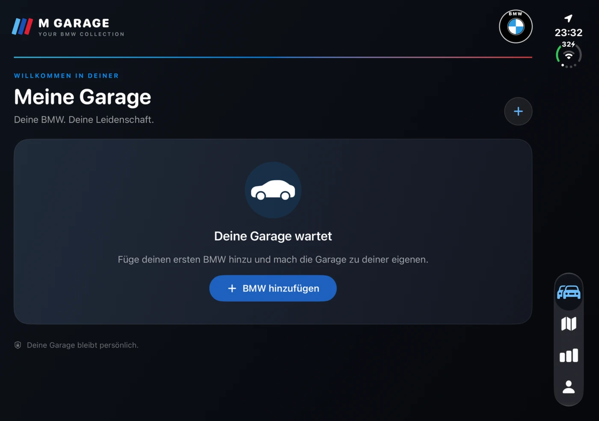

Fahrzeuge & VIN
Fahrzeuge mit VIN, Modell, Farbe, Ausstattung, Foto und Notizen erfassen. Die VIN lässt sich eingeben, einfügen oder mit der Kamera übernehmen.
M GARAGE · NEUES PROJEKT VON NW VISUALS
Fahrzeugdaten, Fotos und Notizen in deiner persönlichen Garage. Halte Ausfahrten und Kosten fest und behalte deine Sammlung im Blick.
Unabhängiges Entwicklungsprojekt von NW Visuals. Keine offizielle BMW-App. M Garage ist der aktuelle Arbeitsname.

01 / DAS PROJEKT
M Garage beginnt bei der persönlichen Fahrzeugverwaltung. Der aktuelle Stand setzt auf lokale Daten und bewusst ausgelöste Verbindungen.
Fahrzeuge mit VIN, Modell, Farbe, Ausstattung, Foto und Notizen erfassen. Die VIN lässt sich eingeben, einfügen oder mit der Kamera übernehmen.
Ausfahrt, Datum, Kilometer und Notizen manuell einem Fahrzeug zuordnen. Im aktuellen Stand werden keine Fahrten automatisch aufgezeichnet.
Tanken, Laden, Service, Reifen oder Versicherung mit Betrag und Datum erfassen. Die Einträge bleiben deiner Garage zugeordnet.
Die Anbindung wird für unterstützte Fahrzeuge erprobt, die dem eigenen BMW-Konto zugeordnet sind. Sie erfordert Freigabe, eigene Client-ID und aktivierten API-Zugang. Eine automatische Abfrage beliebiger VINs ist nicht enthalten.
02 / APP-AUFNAHMEN
Originalaufnahmen vom 27. Oktober 2026 zeigen die Garage in zwei Darstellungen. Funktionen und Layout werden weiterentwickelt; die Aufnahmen sind kein Nachweis einer veröffentlichten Store-Version.

03 / ENTWICKLUNGSSTAND
Dokumentierter Quellstand: Build 9. Fahrzeugverwaltung sowie manuelle Ausfahrten und Kosten sind angelegt. Die VIN-Eingabe und die persönliche BMW-CarData-Anbindung werden erprobt.
Eine automatische Übernahme aus externen VIN-Decodern ist noch nicht implementiert. Die CarData-Anbindung benötigt weiterhin die technische und vertragliche Prüfung vor einer öffentlichen Veröffentlichung.
Die App ist derzeit nicht als öffentliches Store-Angebot verfügbar. Einen Store-Link und verbindliche Leistungsangaben ergänzen wir erst zur Veröffentlichung.
FRAGEN ZU M GARAGE?
Feedback zum Projekt, Datenschutz und Hinweise zu deinen lokalen Daten.